⚠️ 부서와 이름은 본인과 관리자만 볼 수 있어요. 다른 사람에게는 별명만 보여요. 부서와 이름이 제대로 적혀 있지 않으면 계정이 중지될 수 있어요.
2우리 집(홈) 둘러보기
홈 화면이 내 집이에요. 번호를 눌러 보세요.
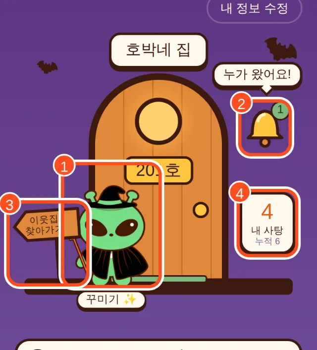
1내 캐릭터 (꾸미기 ✨): 누르면 꾸미기 화면이 열려요. 친구네 놀러 가는 버튼도 여기 안에 있어요!
2초인종 🔔: 누가 우리 집 문을 두드리면 숫자가 떠요. 눌러서 손님을 맞이해요.
3표지판 (이웃집 찾아가기): 이웃을 골라 바로 찾아가거나, 친구 집번호를 직접 입력할 수 있어요.
4내 사탕: 지금 쓸 수 있는 사탕이에요. 아래 작은 숫자는 지금까지 모은 누적 사탕이에요.
그 아래에는
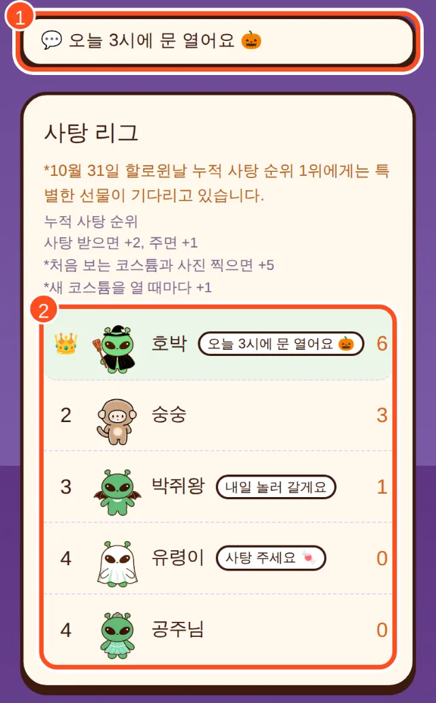
상태 메시지 · 사탕 리그
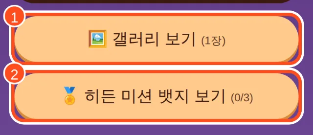
갤러리 · 히든 미션
💬상태 메시지: 누르면 한마디를 남길 수 있어요. 사탕 리그에서 내 별명 옆 말풍선으로 보여요.
🏆사탕 리그: 누적 사탕 순위예요. 10월 31일 1등에게는 특별한 선물이 있어요!
🖼️갤러리 보기: 우리 집에 온 친구와 찍은 사진을 모아 볼 수 있어요.
🏅히든 미션 뱃지 보기: 미션은 비밀이에요! 회색 동그라미를 누르면 미션 제목만 보여요.
🏠 홈으로 돌아가는 법: 어느 화면에서든 왼쪽 위 ← 우리 집으로, 또는 아래쪽 우리 집으로 돌아가기를 누르면 돼요.
3사탕 받으러 가기 (똑똑)
친구네 집 문을 두드리고, 친구가 문을 열어 사탕을 주면 받을 수 있어요.
홈→내 캐릭터 누르기→친구 고르기→똑똑 두드리기
1홈에서 내 캐릭터를 눌러 꾸미기 화면으로 가요.
2아래로 내려 Trick or treat 하러 가기에서 놀러 갈 친구를 골라요. ①
3똑똑 두드리기를 눌러요. ② 친구 화면의 초인종이 울려요!
4친구가 문을 열고 사탕을 주면 사탕이 들어와요. 친구 칸에 오늘 받음 ✓이 떠요.
5홈 왼쪽 우편함 📮에 빨간 점이 뜨면 새 소식이 있어요. 누가 문을 열어줬는지(또는 쫓아냈는지) 확인할 수 있어요.
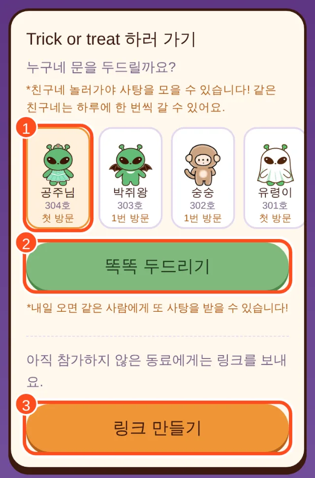
① 친구 고르기 · ② 똑똑 두드리기 · ③ 링크 만들기
📅 같은 친구네는 하루에 한 번 갈 수 있어요. 내일 또 가면 또 사탕을 받을 수 있어요! 친구 칸에 몇 번 방문했는지도 나와요.
③ 링크로 부르기
친구가 아직 참가 전이거나, 메신저로 바로 부르고 싶으면 링크 만들기 → 복사하기 → 메신저에 붙여 넣어요. 친구가 링크를 누르면 내 캐릭터가 친구네 문 앞에 서 있어요. 친구가 사탕을 주면 끝!
4손님 맞이하기 (사탕 주기)
누가 우리 집 문을 두드리면 초인종에 숫자가 뜨고 "누가 왔어요!"가 나와요.
1홈에서 초인종 🔔을 누르고, 손님 옆 문 열기를 눌러요.
2똑똑똑! 다시 문 열기를 누르면 손님이 나타나요.
3사탕 주기 🍬를 누르면 손님은 +2, 나는 +1!
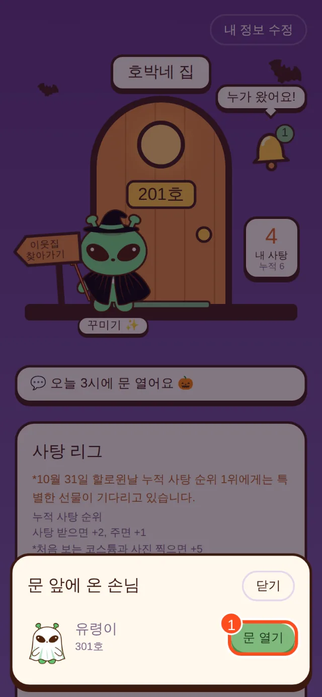
초인종 → 문 열기
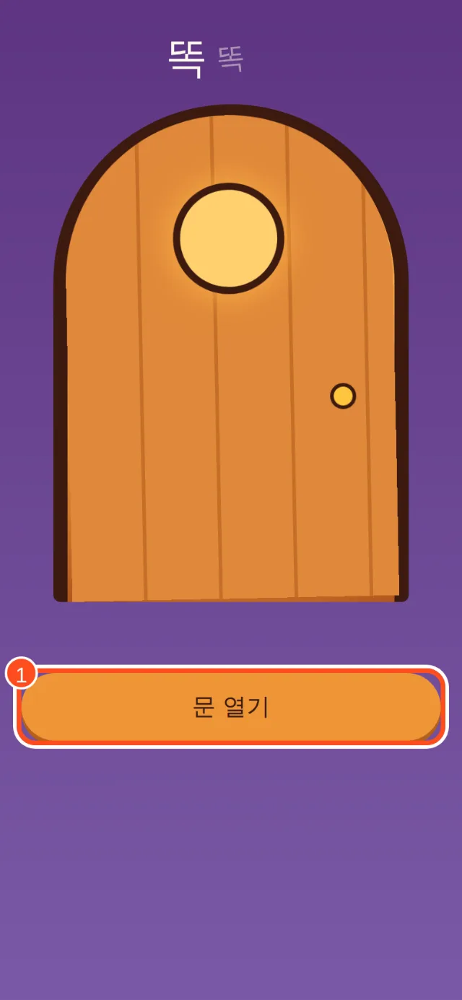
똑똑똑 → 문 열기
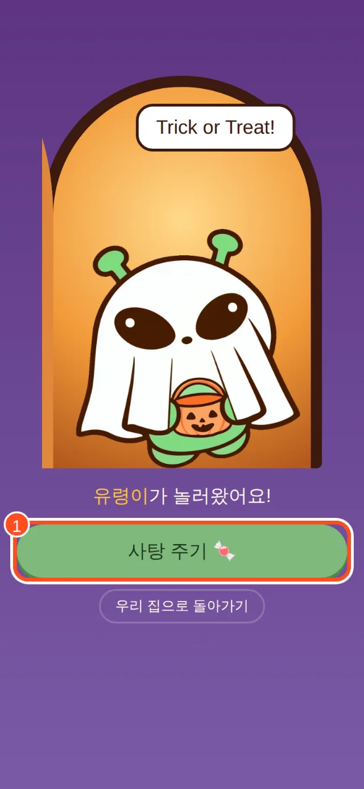
사탕 주기 🍬
🔗 친구가 보낸 링크를 누르거나, 홈의 표지판에 친구가 알려 준 집번호를 넣어도 친구가 우리 집 문 앞에 와요.
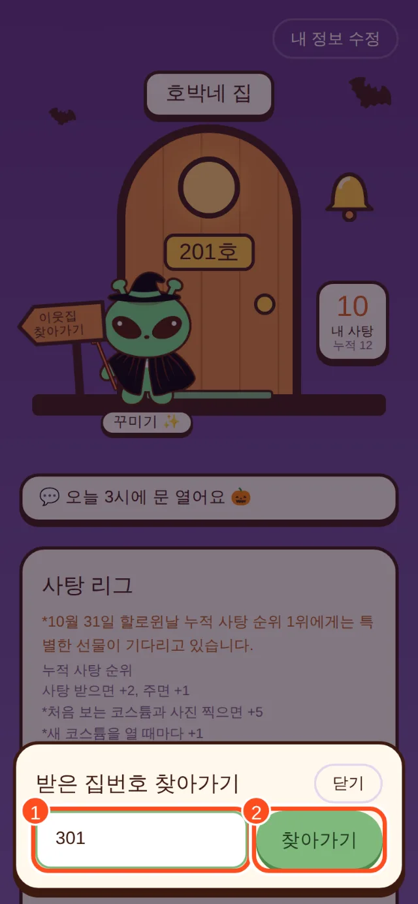
표지판 → 집번호 넣고 찾아가기
5같이 사진 찍기 📸
사탕을 준 다음 손님과 기념사진을 찍을 수 있어요.
1사탕을 주고 나면 같이 사진 찍기 📸 버튼이 나와요.
2사진 저장하기를 누르면 폰에 저장돼요. 저장하지 않아도 갤러리에 자동으로 모여요.
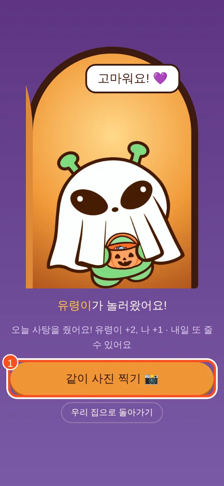
같이 사진 찍기
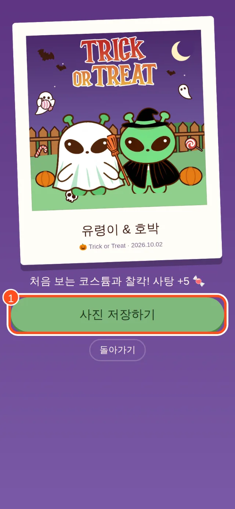
사진 저장하기
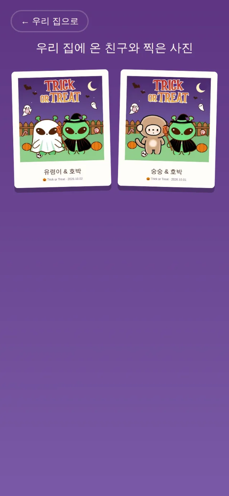
홈 → 갤러리 보기
✨ 처음 보는 코스튬과 사진을 찍으면 보너스 사탕 +5!
6꾸미기
홈에서 내 캐릭터를 누르면 꾸미기 화면이에요.
1← 우리 집으로: 홈으로 돌아가요.
2캐릭터: 캐릭터를 바꿔요. 잠긴 캐릭터는 사탕으로 열 수 있어요.
3옷장: 코스튬을 입어요. 잠긴 코스튬을 누르면 사탕으로 열 수 있어요. 새 코스튬을 열 때마다 보너스 사탕 +1!
4효과: 옷장 아래에 있어요. 파리(사탕 20개)를 쓰면 캐릭터 주변에 파리가 윙윙! 반짝이(사탕 15개)를 쓰고 사탕을 받으면 50% 확률로 사탕을 3개씩 받아요. 거지왹과 함께 쓰면 사탕을 받으러 간 집의 누적 사탕을 1개 뺏을 수 있어요. 집주인은 사탕을 주거나 쫓아낼 수 있어요.
5미리보기: 문 앞에서 내 모습이 어떻게 보이는지 볼 수 있어요.
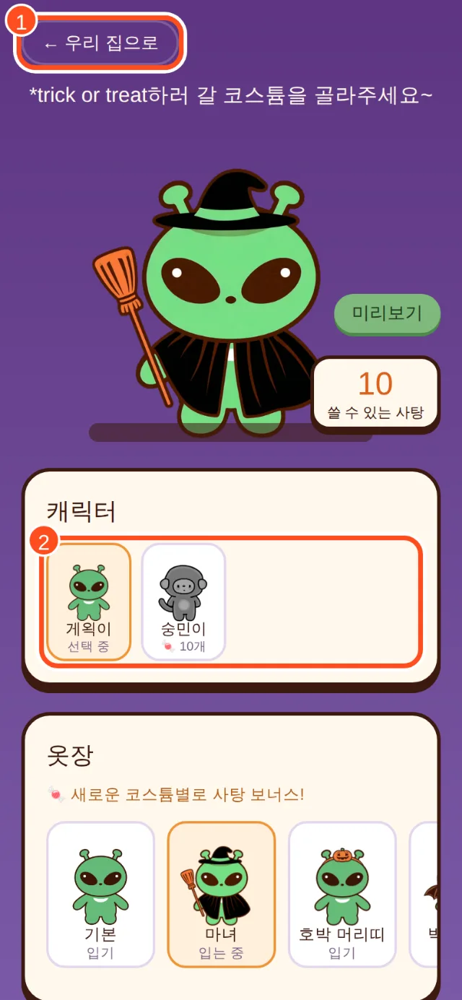
꾸미기 화면
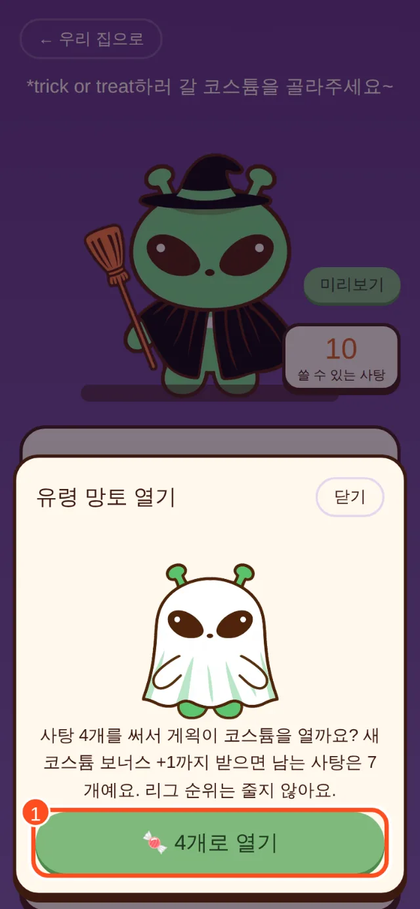
사탕으로 코스튬 열기
💡 사탕을 써도 사탕 리그 순위(누적)는 줄지 않아요. 마음껏 꾸며 보세요!
7사탕 모으기
친구에게 사탕을 받으면
+2
친구에게 사탕을 주면
+1
처음 보는 코스튬과 사진 찍으면
+5
새 코스튬을 열 때마다
+1
거지왹 코스튬을 입고 사탕을 받으면
+3
파리 효과 + 거지왹 손님에게 사탕을 주면 (가끔 호의 보상 +3)
−1
반짝이 효과를 쓰고 사탕을 받으면 (50% 확률)
+3
📅 같은 친구와는 하루에 한 번씩 주고받을 수 있어요. 매일 놀러 가면 사탕이 계속 쌓여요!
🏅 숨겨진 히든 미션도 있어요. 미션을 달성하면 뱃지와 특별한 선물이 열려요. 무엇일지는 직접 찾아보세요!
자주 묻는 질문
다른 폰이나 다른 브라우저로 들어가도 되나요?
로그인 없이 지금 쓰는 폰의 브라우저에 내 집이 저장돼요. 다른 폰이나 다른 브라우저(예: 사파리 ↔ 크롬)로 들어가면 새 사람으로 보여요. 항상 같은 폰, 같은 브라우저로 들어와 주세요.
카카오톡에서 링크를 눌렀더니 다른 브라우저가 열려요.
정상이에요! 게임이 잘 작동하도록 카카오톡 링크는 바깥 브라우저로 열리게 되어 있어요. 다음부터도 그 브라우저로 들어와 주세요.
친구네 문을 두드렸는데 사탕이 안 들어와요.
친구가 초인종을 보고 문을 열어 사탕을 줘야 들어와요. 친구에게 링크를 보내거나 살짝 알려 주세요 😉
같은 친구네 또 갈 수 있어요?
네! 같은 친구네는 하루에 한 번씩 갈 수 있어요. 한국 시간 자정이 지나면 다시 똑똑할 수 있어요. (해외에 있어도 한국 시간 기준이에요)